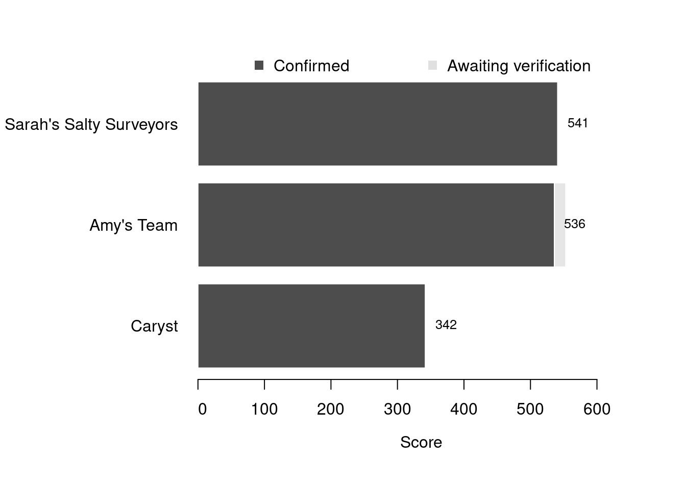

Content
You can view all the wildlife recorded at this event on iNaturalist.


| Records | 120 |
| Species | 57 |
| Verified species | 56 |
| Observers | 3 |
| Potential score | 987 |
| Confirmed score | 978 |
| Top verified species | Corallina berteroi |
| Top species rarity score | 88 |
| Registered participants | 3 |
| Children attending | 0 |
Congratulations to Sarah’s Salty Surveyors for taking the gold medal in this BioBlitz Battle! And well done to everyone for a great game and some fantastic wildlife finds.
| Team | Records | Potential Score | Confirmed Score |
|---|---|---|---|
| Sarah’s Salty Surveyors | 36 | 541 | 541 |
| Amy’s Team | 39 | 553 | 536 |
| Caryst | 45 | 319 | 342 |

| Participant | Records | Potential Score | Confirmed Score |
|---|---|---|---|
| Sarah | 36 | 541 | 541 |
| Amy | 39 | 553 | 536 |
| caryst | 45 | 319 | 342 |
A total of 5 species have a verified rarity score of 33 or higher.


Community verified records only
Click any image to view the taxon on iNaturalist.
| Name | Rarity Score | |
|---|---|---|

|
Common Coralline - Corallina berteroi | 88 |

|
Odonthalia dentata | 42 |

|
sand binder - Rhodothamniella floridula | 41 |

|
Chain Tunicate - Botrylloides violaceus | 35 |

|
Cladophora rupestris | 33 |

|
Northern Blood Star - Henricia sanguinolenta | 32 |

|
Fifteen-scaled Worm - Harmothoe imbricata | 29 |

|
ladder ascidian - Botrylloides leachii | 28 |

|
Keyhole Bryozoan - Cryptosula pallasiana | 28 |

|
Gammarus | 28 |

|
Nacellid Limpets, Tortoiseshell Limpets, and Allies - Nacellida | 28 |

|
Sea Rods - Laminaria hyperborea | 25 |

|
Sea Comb - Plocamium cartilagineum | 23 |

|
Desmarestia | 22 |

|
Common Goby - Pomatoschistus microps | 20 |

|
Black Squat Lobster - Galathea squamifera | 18 |

|
Pink Plate Weeds - Lithophyllum incrustans | 18 |

|
Banded Weeds - Ceramium | 17 |

|
European Cowrie - Trivia monacha | 17 |

|
Hairy Sea-mat - Electra pilosa | 16 |

|
Rough Periwinkle - Littorina saxatilis | 16 |

|
Rock Gunnel - Pholis gunnellus | 16 |

|
Long-clawed Porcelain Crab - Pisidia longicornis | 16 |

|
Wrack Siphon Weed - Vertebrata lanosa | 16 |

|
Sand Mason Worm - Lanice conchilega | 14 |

|
Pepper Dulse - Osmundea pinnatifida | 14 |

|
Dulse - Palmaria palmata | 14 |

|
Spiral Tube Worms - Spirorbinae | 14 |

|
Dwarf Brittle Star - Amphipholis squamata | 13 |

|
Longspined Bullhead - Taurulus bubalis | 13 |

|
Star Tunicate - Botryllus schlosseri | 12 |

|
Flat Periwinkle - Littorina obtusata | 12 |

|
Sugar Kelp - Saccharina latissima | 12 |

|
Christmas Tree Worms - Spirobranchus | 12 |

|
Thongweed - Himanthalia elongata | 11 |

|
Common Brittle Star - Ophiothrix fragilis | 11 |

|
Rockpool Prawn - Palaemon elegans | 11 |

|
Grey Topshell - Steromphala cineraria | 11 |

|
Irish Moss - Chondrus crispus | 10 |

|
Halichondriidae | 10 |

|
Grey Mail-shell - Lepidochitona cinerea | 10 |

|
Hairy Porcelain Crab - Porcellana platycheles | 10 |

|
Velvet Swimming Crab - Necora puber | 9 |

|
Common Hermit Crab - Pagurus bernhardus | 9 |

|
Atlantic Beadlet Anemone - Actinia equina | 8 |

|
Knotted Wrack - Ascophyllum nodosum | 8 |

|
Common Whelk - Buccinum undatum | 8 |

|
Edible Crab - Cancer pagurus | 8 |

|
Saw Wrack - Fucus serratus | 8 |

|
bladder wrack - Fucus vesiculosus | 8 |

|
Shanny - Lipophrys pholis | 8 |

|
Common Periwinkle - Littorina littorea | 8 |

|
Atlantic Dogwhelk - Nucella lapillus | 8 |

|
Common European Limpet - Patella vulgata | 8 |

|
European Green Crab - Carcinus maenas | 7 |

|
Common Redshank - Tringa totanus | 7 |